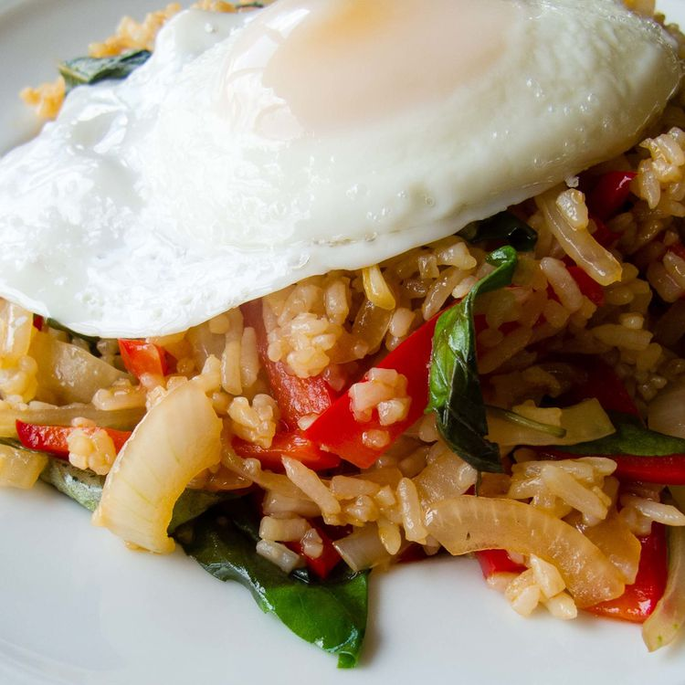

Thai Fried Rice

Ingredients:
- 3 tablespoons oyster sauce
- 2 tablespoons fish sauce
- 1 teaspoon sugar
- 1/2 cup peanut oil for frying
- 6 large cloves garlic clove, crushed
- 2 serrano peppers, crushed
- 1 pound boneless, skinless chicken breast, cut into thin strips
- 1 red bell pepper, thinly sliced
- 1 onion, thinly sliced
- 4 cups cooked jasmine rice, chilled
- 2 cups sweet Thai basil
- 1 cucumber, sliced (Optional)
- 1/2 cup cilantro sprigs (Optional)
Steps:
- Step 1: Whisk together oyster sauce, fish sauce, and sugar in a small bowl; set aside.
- Step 2: Heat oil in a wok over medium-high heat until oil begins to smoke. Add garlic and serrano peppers, stirring quickly. Stir in chicken, bell pepper, onion, and oyster sauce mixture; cook until chicken is no longer pink in the center and the juices run clear.
- Step 3: Increase heat to high and stir in chilled rice; stir quickly until sauce is well blended with rice. Use the back of a spoon to break up any rice sticking together.
- Step 4: Remove the wok from heat. Stir in basil leaves. Garnish with sliced cucumber and cilantro.
Back to home